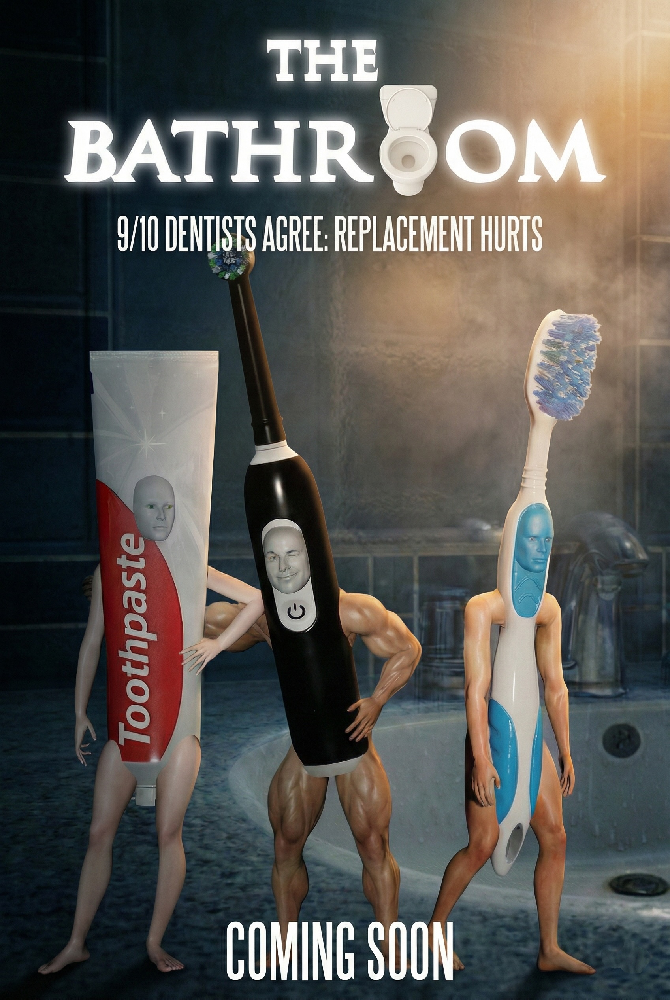
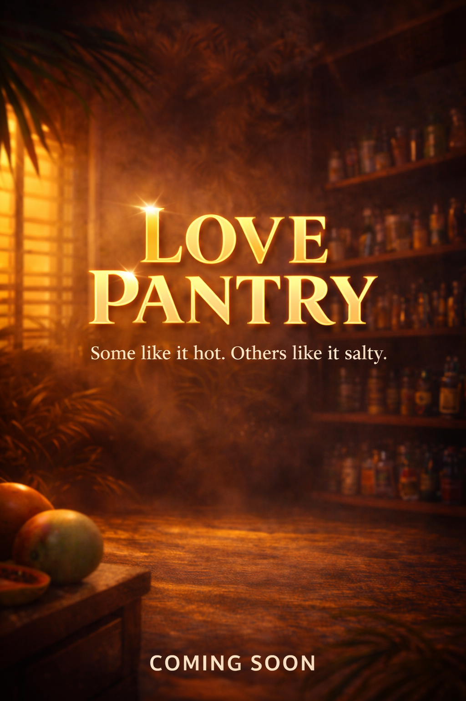

Projects
THE FRIDGE
An existential web series that follows various food items as they seek to cope with suffering, mortality, and the challenging search for meaning.
Great Goats
An AI-generated web series documenting the lives of goat versions of very important people throughout history.
Upcoming Projects
THE BATHROOM

Love Pantry
